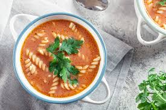

Makaron z sosem pomidorowym
Pyszny makaron z domowym sosem pomidorowym i bazylią.

Domowe ciasto czekoladowe
Łatwe i szybkie ciasto czekoladowe, idealne do kawy.
Świeża sałatka grecka
Lekka sałatka z fetą, pomidorami i oliwkami.

Zupa pomidorowa
Tradycyjna zupa pomidorowa na rosole.
Pieczony łosoś
Soczysty łosoś pieczony w ziołach.